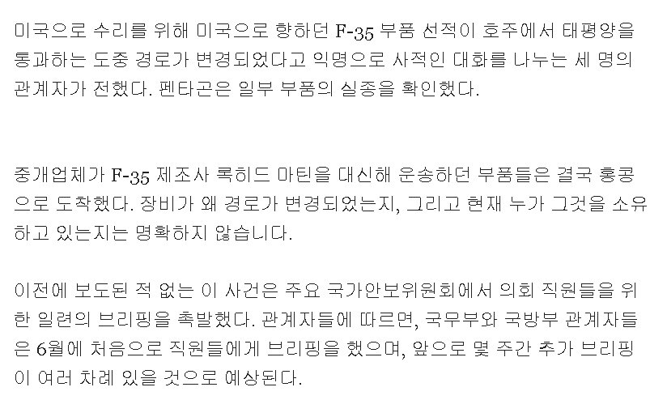

https://www.politico.com/news/2026/09/18/congress-f-35-china-investigation-01083647
벌써 몇개월 전에 벌어진 일이라는데,
수리하려고 미국으로 향하던 중 무슨 이유에선지
홍콩으로 경로가 변경된 이후 사라졌다.
가져간 건 누가 봐도 중국일 터.
지금쯤 씹고 뜯고 맛보고 즐기고 있겠지.

https://www.politico.com/news/2026/09/18/congress-f-35-china-investigation-01083647
벌써 몇개월 전에 벌어진 일이라는데,
수리하려고 미국으로 향하던 중 무슨 이유에선지
홍콩으로 경로가 변경된 이후 사라졌다.
가져간 건 누가 봐도 중국일 터.
지금쯤 씹고 뜯고 맛보고 즐기고 있겠지.
활동가라 해주세요
활동가라는 것들 다 간첩임?
전략적 위치이동이다 아쎄이!
지구촌 내의 물건을
지구촌 내 다른지역으로 옮기는 것 뿐이오
이런거 하면 얼마나 받을까
아무리 많이받아도 평생 국가단위 그것도 미국에의한 살해위험도 올라가겠지ㅋㅋㅋㅋ
그냥 공무원월급 나올지도 ㅋㅋㅋㅋㅋㅋㅋㅋ
너무 슬픈데?
와 대단하네
진짜 목숨 걸었나봐
어떤 중개업체를 썼길래 저 지랄이 나냐
존나 골때리네
중국 공작원이 차린 가짜 업체인가
"익명으로 사적인 대화를 나누는 세명의 관계자"
인류 기술 발전의 자연스러운 단계
2018~2023기준 100만개 이상 f35부품이 분실됐다고?ㄷㄷ
100만개 분실은 그냥 폐기처리한 부품도 분실로 포함한 갯수일껄
🇨🇳 의 긴빠이는 유구한 전통이지
몇 명이나 매수를 해야 저게 가능할 지 ㄷㄷ
존나 말이 되나 저게
견쌍섭 이 미친새끼
우리 장갑차도 한번 억류당한적 있음
ㄷㄷ 미국이 이걸 당해?
진짜 인류의암덩어리
중국스텔스 전투기 생긴건 그럴듯하게 보이긴 하던데
예전에 미군 설계도면 대량으로 유출되고나서 모양 비슷한 스텔스기 몇몇 만들어냈었는데
이젠 소재분석까지해서 성능까지 올라갈듯...
노머고 하는 짓 보면 마냥 긴빠이라 생각하기도 힘듦
전략적 위치이동
이게 말이되나 ㅋㅋㅋ기밀 군사 물품이 한진택배로 배송되는것도아닐텐데
예전에 우리나라 K21 보병전투차도 홍콩에
억류당한적이 있는데 홍콩이 적화되면서
이상이한 일이 종종 생기네 ...
중공이 너무 많이 컸다
간첩인가?